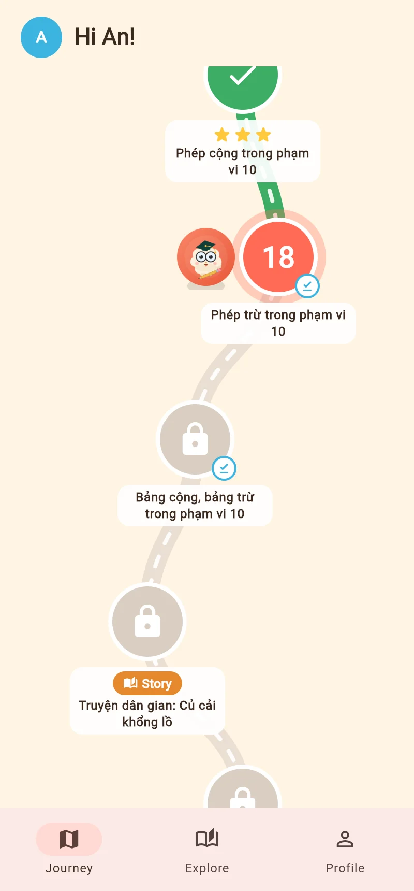

Math for grades 1 – 5 · Open for trial
Math that feels like play,
Math that feels like play,
progress parents can see
Math Mallow takes kids stage by stage along an adventure map, following the school curriculum and building real understanding with the Singapore method. After every lesson, parents know which skills are solid and which need more practice.
📘 Vietnam 2018 curriculum
🧮 Singapore method
🚫 No ads
